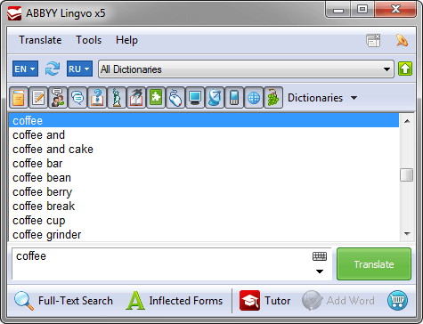
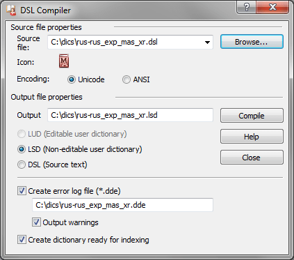

Lingvo x5 (15.0)
Замечания
Версия программы выпущена в 2011 году.
Введена в использование директива предварительной обработки #ICON_FILE (в официальной документации не упоминается).
Возможности Компилятора DSL пополнились режимом пакетной работы из командной строки. В официальной документации о новинке объявлено не было. О функционале сообщил на форуме компании специалист службы тех-поддержки ABBYY в ответ на просьбы пользователей. При этом не все параметры были упомянуты и о существовании части из них пользователи узнавали самостоятельно.
Добавлена поддержка (без упоминания в официальной документации) языков: азербайджанский, киргизский, таджикский, туркменский, узбекский. Языки поддерживаются по обоим атрибутам (name и id).
Добавлена поддержка (без упоминания в официальной документации) башкирского языка только по атрибуту name. Атрибут id не поддерживается (вызывает ошибку).
Недоразумения в поддержке латинского языка, появившиеся в версии x3, имеют место до версии 15.0.511.0. А именно: в языковых директивах и атрибуте name тэга lang поддерживается наименование Latin. При этом в атрибуте id тэга lang поддерживается идентификатор 1540, а идентификатор 1142 объявляется ошибочным. Это противоречит стандартам, согласно которым таблице символов Latin соответствует идентификатор 1142, а идентификатору 1540 соответствует таблица символов Latin_legacy.
Начиная с версии 15.0.826.5 в атрибуте id тэга lang начинает поддерживаться идентификатор 1142, а идентификатор 1540 объявляется ошибочным. Несмотря на это в системных латинских словарях продолжает использоваться идентификатор 1540. Исправление этой ситуации происходит в версии 15.0.826.26.
Прекращена поддержка Немецкого языка новой орфографии (GermanNewSpelling, 32775), который поддерживался в Lingvo начиная с версии 8.0.
Внешний вид
Вид основного окна программы.

Вид словарной карточки.

Вкладка «Вид словарной карточки» в диалоге настроек программы.

Вид окна компилятора пользовательских словарей.

Состав словарей
| Наименование | Автор, издание | Объём |
|---|---|---|
| ... в разработке ... | ... в разработке ... | ... в разработке ... |